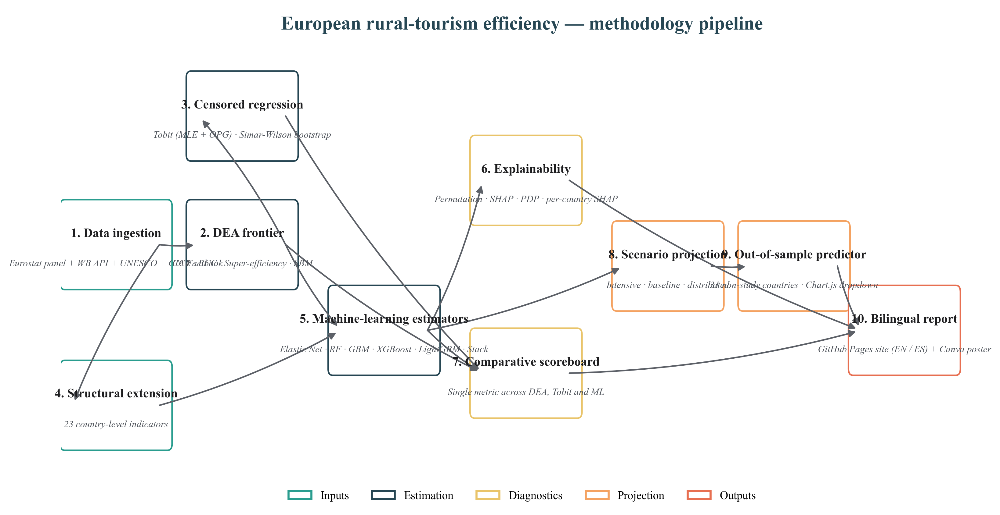
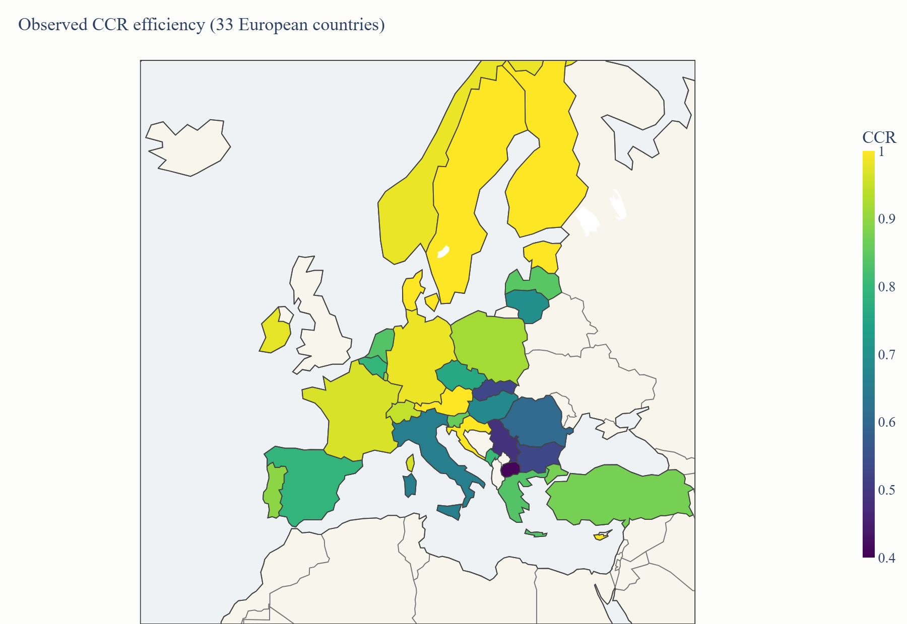
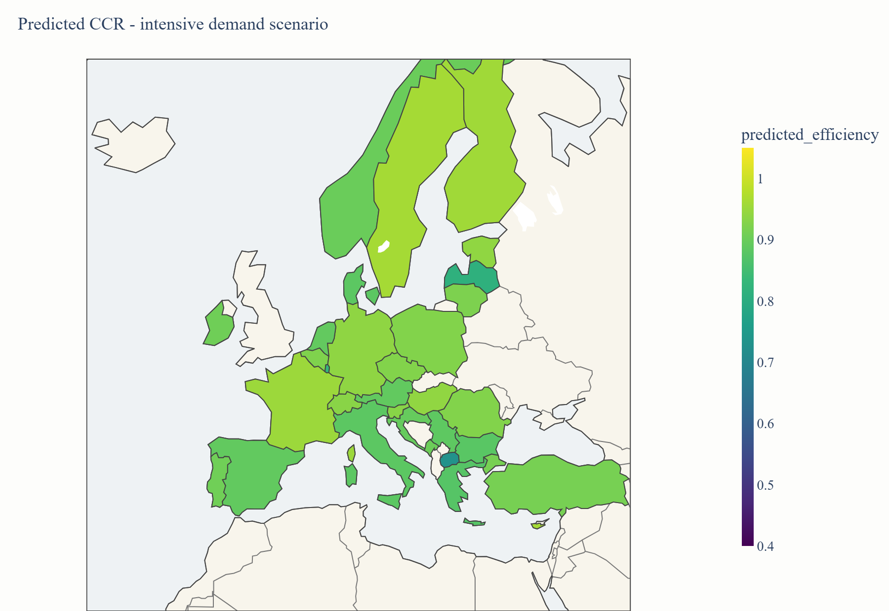
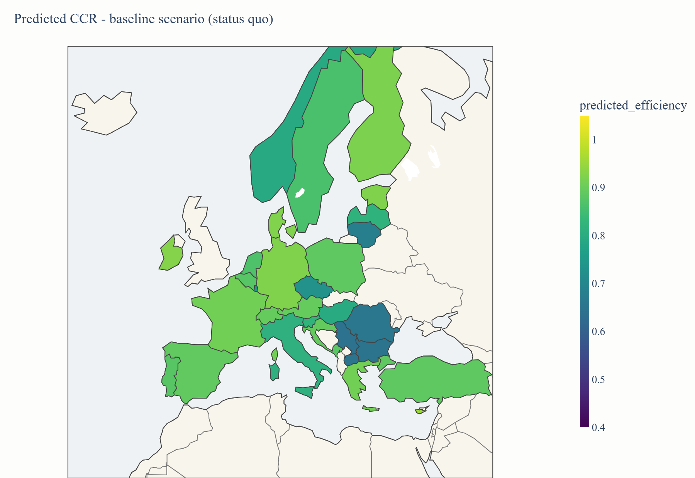
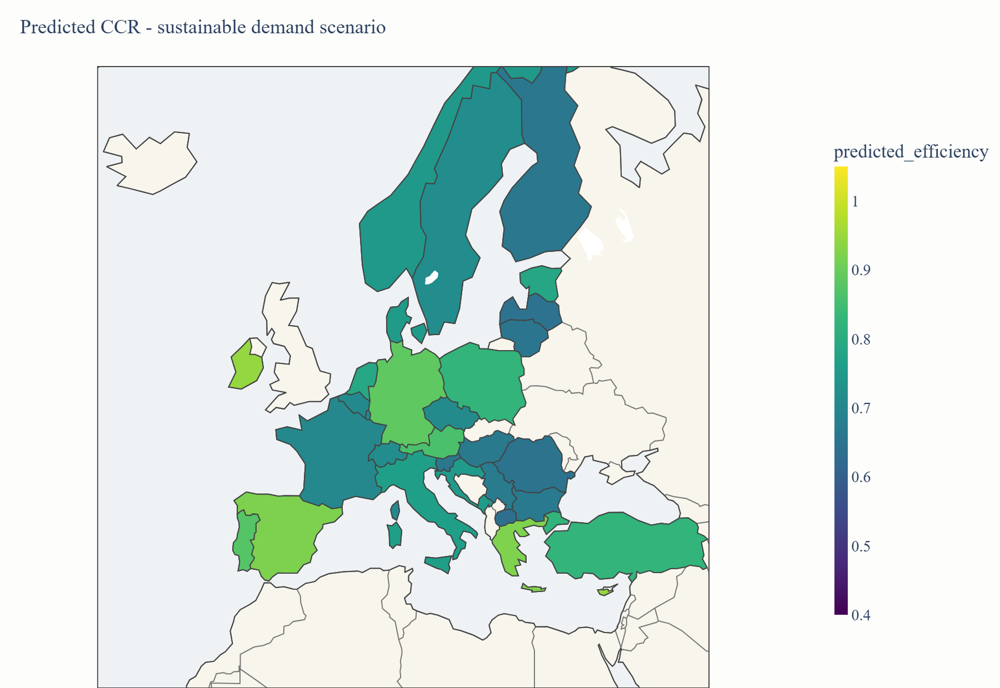

Methodology

{kind=link}
Data
Two panels: the original Eurostat sectoral block and a 23-indicator structural extension.
Sample
33 European countries, year 2025.
Estimators
6 ML learners + ensemble + scenario projector.
Code
Python · scikit-learn · XGBoost · LightGBM · SHAP · Plotly · Chart.js.
| Block | Variables | Source |
|---|---|---|
| Sectoral inputs | Beds, establishments, employees | Eurostat |
| Sectoral outputs | Travellers, overnight stays | Eurostat |
| Sectoral regressors | Seasonality, length of stay, protected hectares, tourist pressure | Authors' compilation |
| Macro context | GDP, growth and sectoral value-added | World Bank |
| Human capital & connectivity | Education and digital connectivity | World Bank |
| Territory & environment | Land use and emissions | World Bank |
| Infrastructure | Health, logistics, aviation | World Bank · CIA Factbook |
| Tourism direct | Tourism flows and heritage | World Bank · UNESCO |
Machine learning
Baseline (4 variables) vs structural extension (23 indicators).
- Elastic Net · linear baseline
- Random Forest · bagging
- Gradient Boosting · sequential trees
- XGBoost · regularised boosting
- LightGBM · histogram boosting
- Stacked ensemble · Ridge meta-learner
Explainability
Global feature importance
Partial dependence
Country-level explanations
Per-country SHAP decomposition.
Comparative scoreboard
Loading scoreboard…
Maps and future scenarios
| Scenario | Length of stay | Seasonality | Tourist pressure | Protected hectares |
|---|---|---|---|---|
| Intensive demand | −15% | +25% | +20% | −10% |
| Baseline | 0% | 0% | 0% | 0% |
| Sustainable demand | +20% | −25% | −15% | +10% |
Density of observed efficiency

Three-scenario predictive maps



Country predictor (out-of-sample)
Intensive demand
Baseline (status quo)
Sustainable demand
Reproducibility
pip install -r requirements.txt
python scripts/01_prepare_data.py # tidy CSVs
python scripts/02_run_dea.py # frontier scores
python scripts/03_run_tobit.py # censored regression
python scripts/04_fetch_external_data.py # World Bank features
python scripts/05_run_ml_models.py # ML + SHAP
python scripts/06_make_figures.py # bilingual plots
python scripts/07_make_maps.py # choropleth maps
python scripts/08_predict_non_study.py # external-country JSON
python scripts/09_make_comparison.py # comparative scoreboard